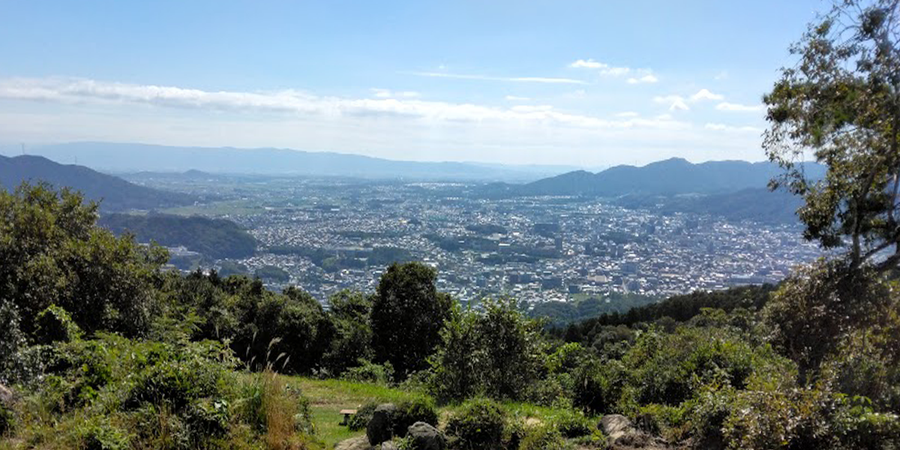
大宰府には、時代を動かした人々の足跡が今も数多く残っている。
学問を愛し、この地で生涯を終えた菅原道真。
万葉文化を大宰府に花開かせた大伴旅人と山上憶良。
戒壇院を開き、日本へ正式な戒律を伝えた鑑真和上。
遠い唐の地で故郷を想い続けた阿倍仲麻呂。
唐で学んだ知識を日本の政治や文化に生かした吉備真備。
そして、唐から新しい知識や文化をもたらした玄昉。
史跡を歩くだけでは見えてこない人々の人生を知ることで、大宰府の風景は少し違って見えてくる。
このページでは、大宰府の歴史を彩った人々の足跡を訪ね、
その生涯とゆかりの地を辿っていきたいと思います。
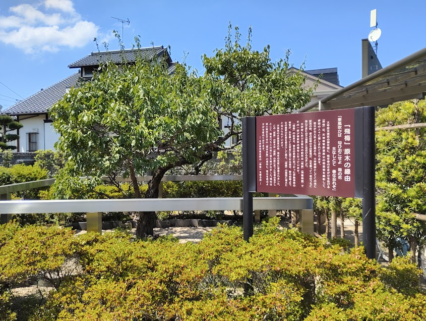
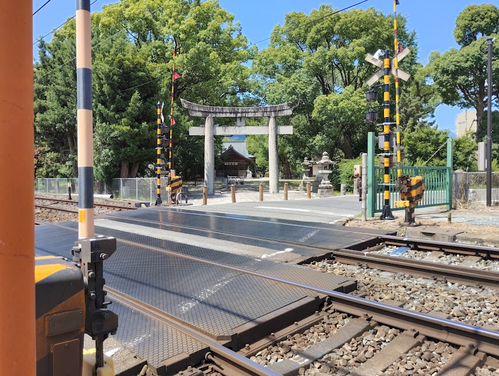
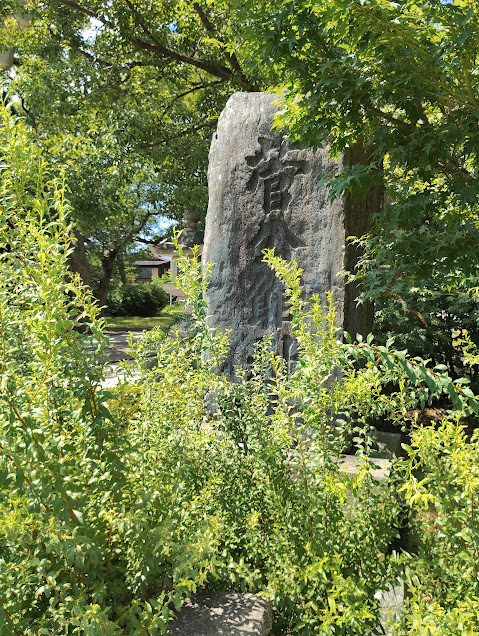
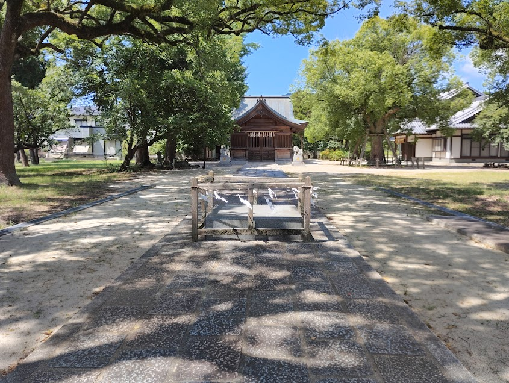
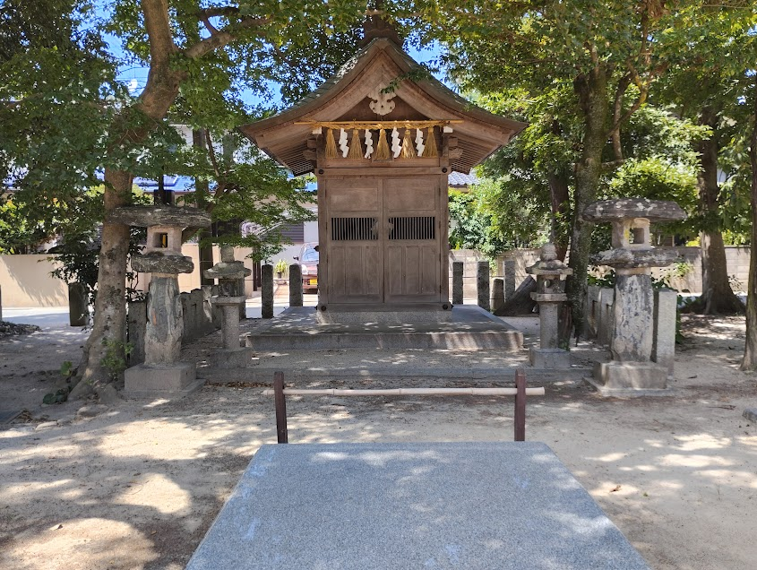
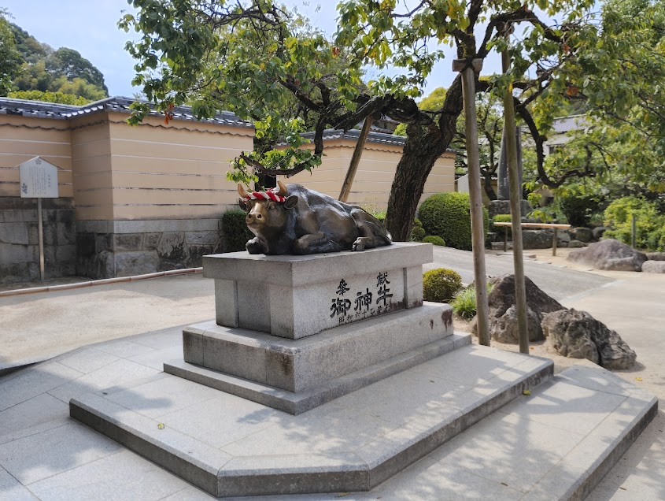
菅原道真は、承和十二年（八四五）、学問を家業とする菅原氏に生まれた。
菅原氏は奈良時代から大学寮で学問を教える家柄として知られ、父・菅原是善も大学頭を務めた学者である。
幼い頃から学問に親しんだ道真は、漢詩や文章に優れ、その才能は朝廷でも高く評価されるようになった。
学者として歩み始めた道真は、宇多天皇の厚い信任を受け、
讃岐守や式部少輔などを歴任し、ついには右大臣にまで昇りつめる。
学者の家に生まれた人物が、朝廷の最高政務に携わる右大臣へ就くことは極めて異例だった。
しかし、その異例の出世は、藤原氏が大きな影響力を持つ朝廷の中で、政治の均衡を揺るがすことになる。
やがて左大臣・藤原時平らとの対立は深まり、昌泰四年（九〇一）、道真は「昌泰の変」により大宰権帥へ左遷された。
大宰権帥は大宰府の長官である大宰帥の代理職であった。
しかし、道真にとっては政務を執るための赴任ではなく、都を追われる左遷であった。
京の都を離れ、西へ。
道真は、どのような思いでこの地へ向かったのだろうか。
その足跡を訪ねるため、私は道真が暮らした太宰府を歩くことにした。
都府楼前駅を降りてまず榎社へ向かうことにした。
その前に、どうしても立ち寄っておきたい場所がある。
飛梅の原木と伝えられる梅である。
真夏の強い日差しの中、住宅街を歩くこと約一キロ。
地図を片手に細い路地を曲がると、民家の一角に一本の梅の木が静かに立っていた。
太宰府天満宮の飛梅はあまりにも有名だ。
しかし、その原木と伝えられる梅が、
今も人々の暮らしの中で大切に守られていることは、あまり知られていない。
道真は都を離れるとき、
「東風吹かば にほひおこせよ 梅の花
主なしとて 春を忘るな」
この歌から飛梅伝説は生まれた。
もちろん、梅が本当に都から飛んできたわけではない。
それでも、この梅を見つめていると、人々が千年以上にわたり道真を慕い、
その想いを受け継いできたことだけは確かな歴史なのだと感じる。
梅の葉を揺らす夏の風を受けながら、私は再び歩き始めた。
目的地は、道真が二年間を過ごした南館跡、榎社である。
梅の木から榎社までは近く、二分ほど歩くと西鉄天神大牟田線の踏切が見えてきた。
遮断機が下り、特急列車が勢いよく目の前を走り抜ける。
現代の日常そのものの風景だ。
電車が通り過ぎると、町は再び蝉の声に包まれた。
鳥居の左手には榎社の案内板が立ち、右手へ目を向けると「官公館跡」と刻まれた石碑が静かに建っている。
ここが、菅原道真が蟄居した南館の跡と伝えられる場所である。
今は榎社として親しまれているが、千年前、この場所は神社ではなかった。
道真が二年間を過ごした官舎だったのである。
その石碑を見つめていると、不思議なことに、さっきまで見えていた現代の風景が少しずつ遠ざかっていくような気がした。
私は一礼し、鳥居をくぐる。
その瞬間、ふっと風が吹いた。
まるであの日の背中をそっと押されるような、不思議な風だった。
「こちらへ」
そう語りかけられたような気がして、私は境内へ足を踏み入れた。
外では今も電車が走っている。
しかし境内へ入ると、その音は不思議なくらい遠くなり、聞こえてくるのは木々を渡る風と蝉の声だけだった。
もう一度、今度はやさしい風が頬をなでる。
道真は、この風をどんな思いで感じていたのだろう。
都を離れ、この南館で暮らし始めた頃、まだ京へ帰れる日を信じていたのではないだろうか。
道中、防府では親族を訪ねたともいわれる。
幼い隈麿や娘を伴って筑紫へ下ったことを思えば、
この地で待ち受ける過酷な日々を想像していたとは考えにくい。
しかし現実に厳しかった。
『菅家後集』には、門を出ることもなく暮らした日々が、自らの漢詩として残されている。
やがて、幼い隈麿は、この地で父に先立って命を落としたという。
境内を歩いていると、社殿の裏に小さな祠が建っていた。
浄妙尼を祀る祠である。
浄妙尼は、配所で暮らす道真を陰ながら支えた尼僧と伝えられている。
格子越しに梅の枝へ餅を差し入れたことが、梅ヶ枝餅の由来になったという伝承も今に残る。
その実在については定かではない。
それでも、人々はこの場所に祠を建て、その名を千年以上語り継いできた。
毎年行われる太宰府天満宮の神幸式大祭では、道真公の御神輿が榎社へ渡り、この地で一夜を過ごす。
それは、道真を支えた人への感謝を、今も忘れていないという人々の想いなのかもしれない。
榎社を後にし、私は太宰府天満宮へ向かった。
境内には、静かに座る御神牛が多くの参拝者を迎えている。
伝承によれば、道真の亡骸を乗せた牛車を引く牛は、この地で座り込み、どうしても動こうとはしなかったという。
人々はそれを道真公の意思と受け止め、その場所に墓所を築いた。
やがてその墓所を中心に太宰府天満宮が営まれ、牛は道真公ゆかりの神聖な存在として、大切にされるようになった。
飛梅、浄妙尼、そして御神牛。
そのすべてを史実として語ることはできない。
しかし、人々は道真の人生を忘れず、その想いを伝説として語り継ぎ、この町の風景とともに守り続けてきた。
境内を吹き抜ける風は、 飛梅の葉を揺らし、榎社の木々を渡り、
千年以上前と変わらず、この町を静かに巡っているようだった。
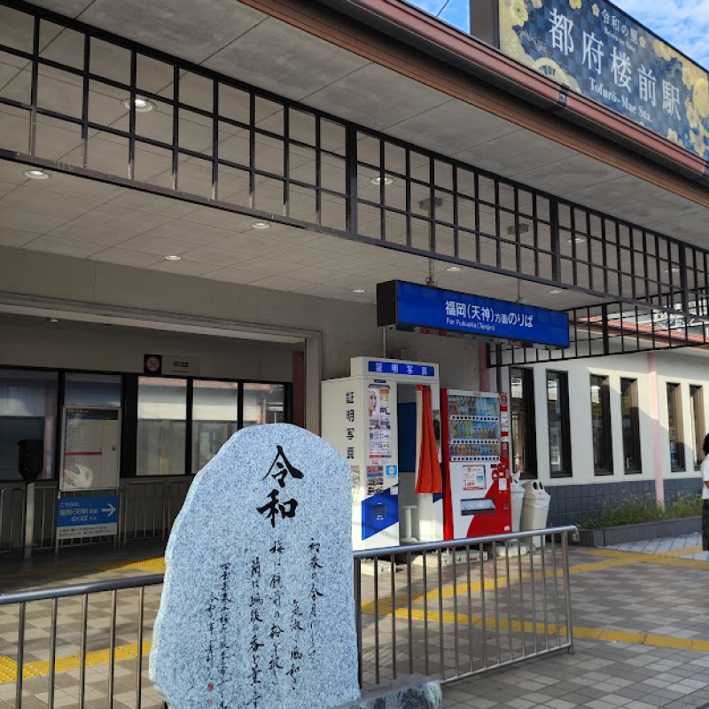
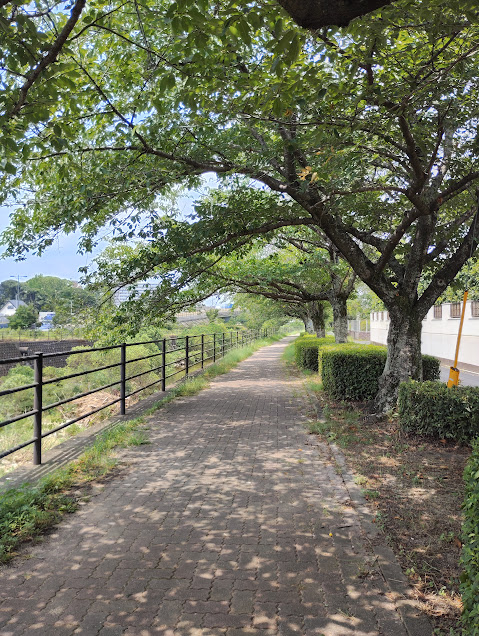
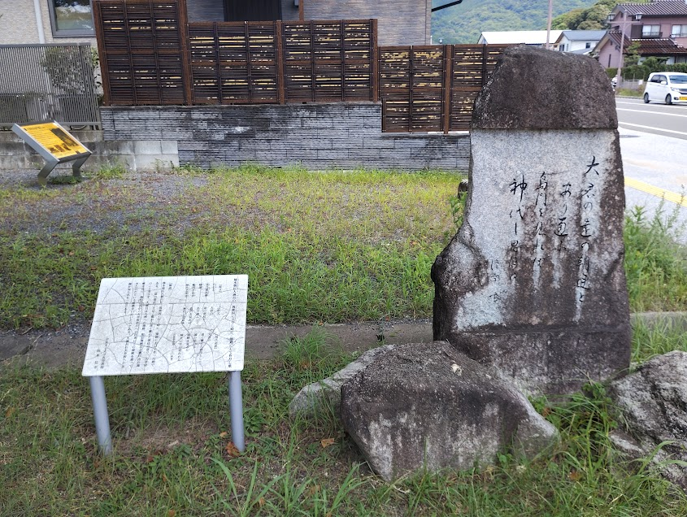
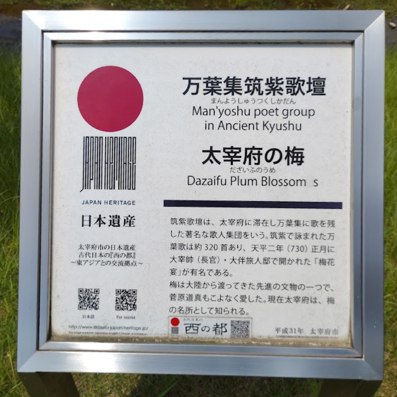
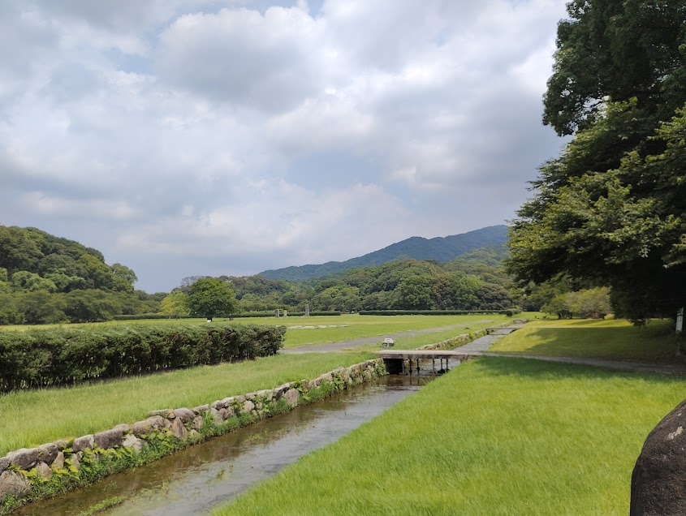
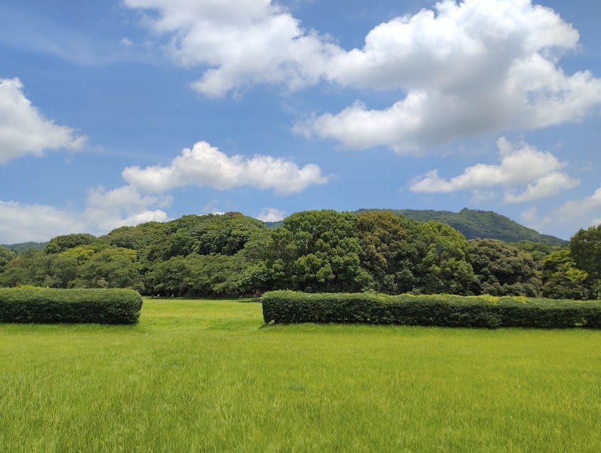
奈良時代、大宰府は西海防衛と外交を担う西日本最大の役所だった。
朝鮮半島や唐との交流の最前線として、多くの役人や外国使節が行き交い、「西の都」と呼ばれるほど栄えていた。
その一方で、都の政治に翻弄され、この地へ赴任する人々も少なくなかった。
当時の朝廷では、藤原氏が急速に勢力を伸ばし、政治の主導権を握りつつあった。
そんな時代の中、大宰府へやって来た二人の人物がいる。
一人は、神亀四年（七二七）、六十三歳で大宰帥として赴任した大伴旅人。
名門・大伴氏の当主であり、朝廷を代表する政治家であると同時に、優れた歌人でもあった。
旅人の大宰府赴任については、西国統治という重要な任務であったとする見方がある一方、
藤原氏が勢力を伸ばす中、中央政治の第一線から距離を置くことになったと考える研究もある。
もう一人は、筑前守として赴任した山上憶良である。
若い頃には遣唐使として唐へ渡り、進んだ文化や思想を学んだ。
帰国後は皇太子の侍講も務め、その学識は朝廷でも高く評価されていた。
二人は五歳違い。
ともに六十歳を超え、それぞれ異なる人生を歩んできた。
しかし、この西の都で出会った二人は、政治家としてだけではなく、一人の歌人としても深く心を通わせていく。
やがて旅人は、大宰府で最愛の妻を亡くす。
深い悲しみに沈む旅人を励ましたのが憶良だった。
悲しみを歌に託し、互いの心に寄り添いながら言葉を交わす。
その交流は、多くの役人や文人たちへ広がり、大宰府には豊かな天平文化が育まれていった。
その文化は、一つの宴によって今も語り継がれている。
旅人はどのような景色を眺め、憶良はどのような思いで歌を詠んだのだろうか。
千三百年の時を越え、その風景は今も大宰府のどこかに静かに残っている。
次は、その歌声が生まれた場所を歩きながら、天平の風に耳を澄ませてみたい。
電車が一つ手前の駅を出ると、車内に「次は、令和の里、都府楼前です」というアナウンスが流れる。
駅前には、『万葉集』「梅花の宴」の序文を刻んだ歌碑が建っている。
初春の令月にして 氣淑く風和ぎ 梅は鏡前の粉を披き 蘭は珮後の香を薫らす
穏やかな春の風と花の香りをたたえたこの序文から、新しい時代の名「令和」は生まれた。
天平二年（730）、大宰帥・大伴旅人の邸宅で開かれた梅花の宴には、
山上憶良をはじめ、多くの歌人たちが集い、三十二首の梅花の歌が詠まれた。
この宴を中心に生まれた歌人たちの交流は、後に「筑紫歌壇」と呼ばれる文化となった。
今日は、その筑紫歌壇を代表する二人、大伴旅人と山上憶良の足跡を訪ねながら、万葉の風に耳を澄ませてみたい。
御笠川沿いの遊歩道を歩き、朱雀大路へ入る。
千三百年前、この道を二人もまた歩いたのだろうか。
そんな思いを胸に、大宰府政庁跡へと向かった。
水辺まで歩いた時、風が吹いた。
私は思わず足を止める。
風が草を揺らし、水面に小さな波紋が広がる。
その静けさの向こうから、誰かの笑い声が聞こえたような気がした。
盃を交わす音。
「それは見事な梅ですな」
「まるで雪が舞っているようではありませんか」
誰かが空を見上げる。
そして、静かに歌を詠み始めた。
我が園に 梅の花散る ひさかたの
天より雪の 流れ来るかも
言葉が風に乗って流れていく。
庭を埋め尽くす白い梅。
その景色だけが、風の向こうに静かに浮かんでいた。
宴はいつまでも続くものではない。
やがて一人の男が、静かに盃を置いた。
山上憶良である。
憶良らは 今は罷らむ 子泣くらむ
それその母も 吾を待つらむぞ
華やかな宴よりも、家族の待つ家へ。
その一首に、父としての憶良の姿が重なる。
ふと風が止む。
四王寺山から吹き下ろす風は、何も語らない。
けれど耳を澄ませると、あの日の歌声は今もこの地に残っているような気がした。
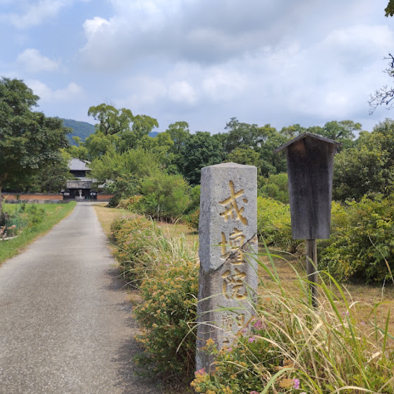
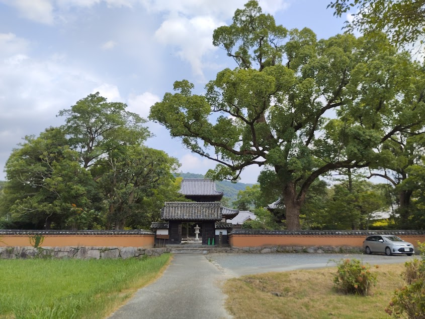
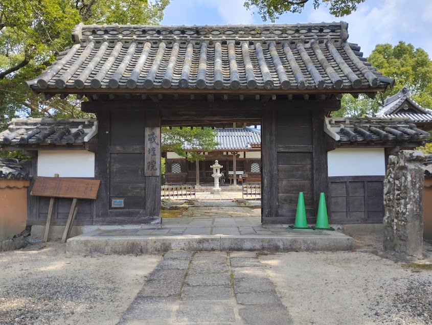
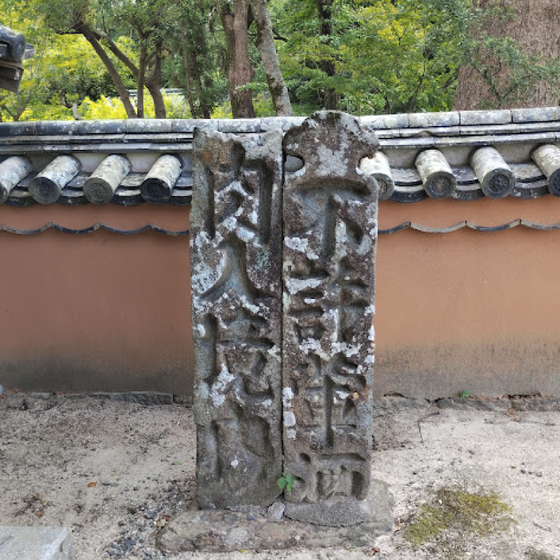
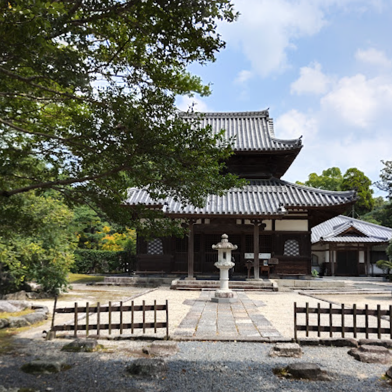
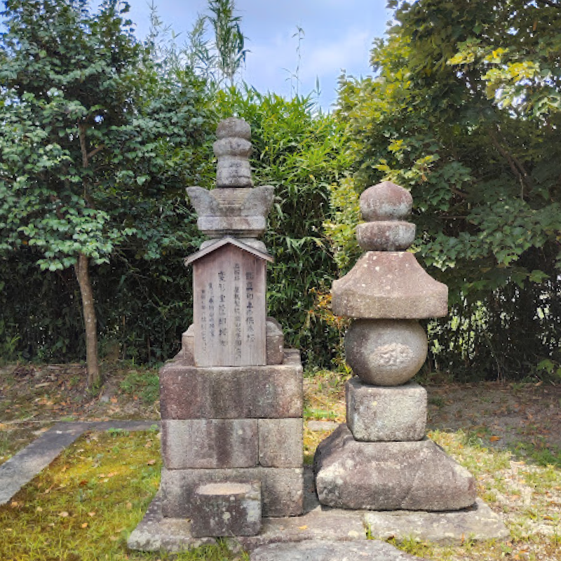
奈良時代、聖武天皇は仏教の力によって国を守る「国家鎮護」を掲げ、全国に国分寺と国分尼寺の建立を命じた。
筑前国でも国分寺と国分尼寺が造られ、大宰府は九州における仏教の重要な拠点となっていく。
しかし、寺を建てるだけでは仏教は完成しなかった。
当時の日本には、正式な戒律を授ける制度がなく、朝廷の許可を受けずに出家する僧も少なくなかった。
朝廷は、本来あるべき僧侶の姿を取り戻すため、唐へ正式な戒律を伝える高僧を招くことを決める。
その使命を託されたのが、留学僧・栄叡と普照であった。二人は唐へ渡り、多くの高僧に日本への渡航を願い出る。
しかし、当時の東シナ海を渡る航海は命懸けである。誰一人として、その願いに応じる者はいなかった。
その時、一人の僧が静かに口を開く。
「是れ法事なり、何ぞ身命を惜しまん」
――これは仏法のための大切な務めである。どうして命を惜しもうか。
その言葉を残したのが、唐・揚州の大明寺を預かる高僧、鑑真であった。
鑑真は戒律の第一人者として唐中にその名を知られ、多くの弟子を育てた名僧である。
その徳は皇帝からも厚く信頼され、一人の僧というより、国の宝ともいえる存在だった。
だからこそ、その渡航は容易には許されなかった。
渡航計画は幾度も妨げられ、船は暴風に流され、難破を繰り返した。
同行した弟子の中には命を落とした者もいる。長い歳月の中で、鑑真自身も視力を失った。
それでも、その志が揺らぐことはなかった。
六度目の航海。
天平勝宝五年（七五三）、六十六歳となった鑑真は、ついに日本へたどり着く。
その最初の一歩を記した場所が、西の都・大宰府であった。
その後、鑑真は平城京へ迎えられ、日本で初めて正式な戒壇を開き、戒律を伝える礎を築く。
その教えはやがて大宰府にも受け継がれ、日本三戒壇の一つが置かれることになる。
私は、その足跡を訪ねるため、鑑真が歩いた大宰府を歩くことにした。
鑑真和上の足跡を訪ねて、今日も都府楼前駅からスタートした。
本来なら、鑑真が日本へたどり着くまでの苦難を思いながら、戒壇院まで歩いて向かいたい。
しかし、この日の太宰府も容赦のない暑さだった。
連日の散策で少し体も重い。
今日は、まほろば号に乗って戒壇院へ向かうことにした。
バスを降りると、最初に目に入ったのは「日本三戒壇」の一つ、西戒壇を案内する看板だった。
東大寺、下野薬師寺と並び、日本で正式に戒律を授けることができた三つの戒壇。その一つが、この戒壇院である。
案内板を見終え、参道へ向かう。
入口には、「戒壇院」と金文字で刻まれた石柱が静かに立っていた。
近づいて見ると、その石柱は大きく割れている。
長い年月を耐えてきた石は傷つきながらも、今もなお、この場所への入口を静かに示し続けていた。
石柱の先には、まっすぐ伸びる参道。
その奥には、四王寺山を背に戒壇院が静かに佇んでいる。
派手さはない。
けれど、その落ち着いた景色に、不思議と足がゆっくりになっていく。
参道を歩き、総門の前へ。
総門の左手には、「西戒壇」と書かれた木の標が傾き立っていた。
右手には
「酒肉境内に入るを許さず」
と刻まれた石塔が建っている。
酒や肉を境内へ持ち込まないという意味だろうとは思ったが、なぜここまで戒める必要があるのだろう。
気になってスマートフォンで調べてみると、これは酒や肉だけでなく、
ねぎやにら、にんにくなど香りの強い食べ物も修行の妨げになるため、清浄な境内へ持ち込まないという教えだという。
ここが、日本三戒壇の一つであることを思い出す。
総門をくぐる前から、戒律はすでに始まっていたのである。
そのとき、一陣の風が吹き抜けた。
門をくぐると、風は少しだけやわらかく感じられた。
千二百年以上前。
六度目の航海の末、
ようやく日本へたどり着いた鑑真和上も、この西の都で同じように風を感じたのだろうか。
私はその志に思いを巡らせながら、静かに境内へ足を踏み入れた。
白砂の中央には、石燈籠が凛と立っている。
木漏れ日が揺れ、境内は見渡す限りの静寂に包まれていた。
胸に去来するのは、幾たびの航海の果てに視力を失いながらも日本へ渡った鑑真和上の姿だ。
参道の入口で見た、あの割れた石柱を思い出す。
長い年月を耐え抜いた傷だらけの石は、言葉もなく、確かな意志で聖地への道を指し示していた。
その姿は、数々の苦難を越えた和上の不屈の精神そのものだった。
今、自分が立つ西戒壇の土は、その情熱の延長線上にある。
風がまた静かに吹く。
木々が揺れ、白砂の上を風が通り過ぎていく。
その風の向こうから、一つの声が聞こえた気がした。
「是れ法事なり、何ぞ身命を惜しまん」
私は静かに本堂へ目を向ける。
そして、そっと一礼した。
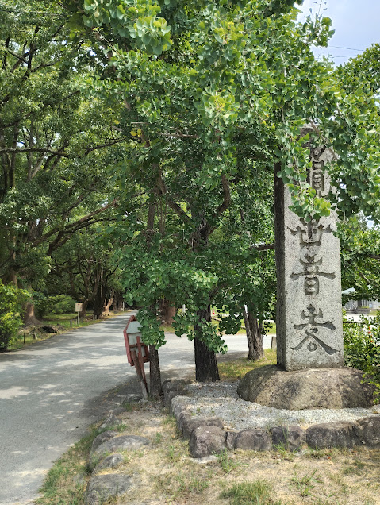
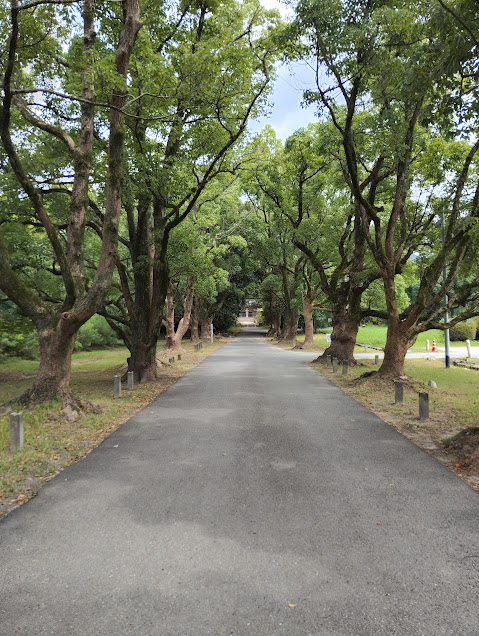
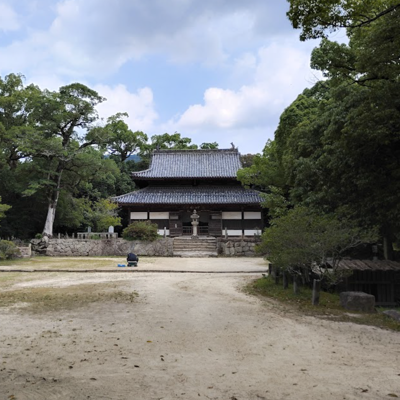
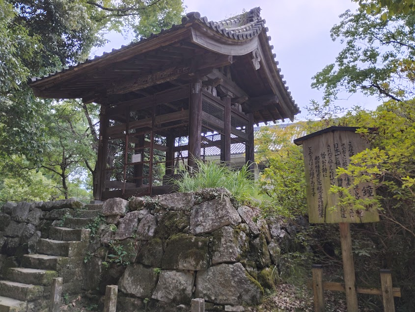
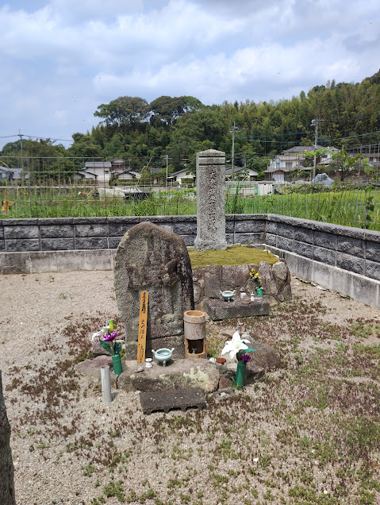
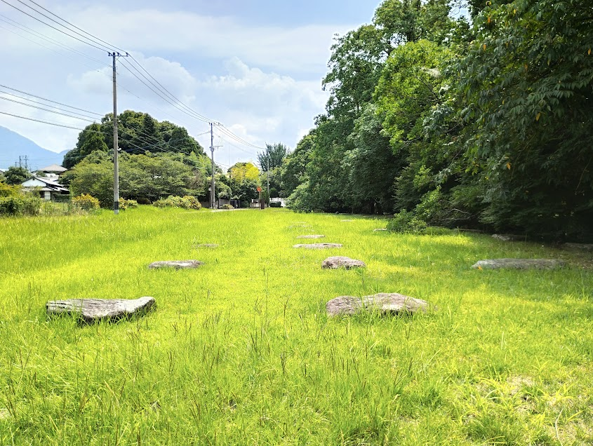
奈良時代、日本は律令国家の完成を目指し、唐の進んだ制度や文化を積極的に取り入れていた。
そのため朝廷は幾度も遣唐使を派遣し、多くの若者が命懸けで海を渡った。
養老元年（七一七年）の遣唐使には、後に奈良時代を代表する三人の人物が選ばれる。
阿倍仲麻呂（六九八〜七七〇年）
阿倍氏の出身。遣唐使として唐へ渡り、難関である科挙に合格した数少ない日本人として知られる。
唐では玄宗皇帝に仕え、高官として活躍したが、日本へ帰国することは叶わず、770年に唐で生涯を終えた。
吉備真備（六九五〜七七五年）
吉備氏の出身。阿倍仲麻呂、玄昉とともに遣唐使として唐へ渡り、学問や政治制度を学ぶ。
735年に帰国すると、その知識を生かして朝廷に仕え、政治や教育の発展に尽くした。
一時は筑前守として大宰府管内に赴任し、後には764年の藤原仲麻呂（恵美押勝）の乱で官軍を率いて勝利した。
玄昉（？〜七四六年）
法相宗の僧。七一七年、遣唐使として唐へ渡り、約18年間にわたって仏教を学ぶ。
735年に帰国すると、持ち帰った多くの経典によって朝廷に重用され、
七三七年には僧正に任じられ、紫衣を賜った。
しかし、その影響力は政争の渦中に置かれることとなり、晩年は大宰府・観世音寺へ下る。
746年、この地でその生涯を閉じた。
三人は同じ遣唐使として海を渡り、それぞれ異なる人生を歩んだ。
その足跡は、今も大宰府の地に残されている。
ここまで来たのだから、次は観世音寺へ向かう。と言っても戒壇院とは隣である。
観世音寺は、斉明天皇の追善のために天智天皇が発願した寺院で、その後、九州を代表する大寺院として栄えた。
鑑真や空海をはじめ、多くの高僧が訪れたことで知られている。
しかし、今回私が会いたかったのは、その人たちではない。
同じ年、遣唐使として唐を目指した阿倍仲麻呂、吉備真備、そして僧玄昉。
その三人の面影を、この地でたどってみたいと思った。
参道入口の石標は、長い歴史を見守ってきた風格を今も漂わせている。
炎天下の熱風を受けながら山門へ向かう。ところが一歩参道へ入ると、
木立を抜ける涼風が汗ばんだ頬をそっとなでた。
境内へ入るだけで空気まで穏やかになる。
やがて大きな本堂が姿を現した。
その堂々とした姿に目を奪われたが、
それ以上に心に残ったのは、本堂の前で黙々と草を抜いている一人の老父の姿だった。
誰に見られるでもなく、一本一本、丁寧に雑草を取り除いている。
観世音寺は、こうした名もなき守り人によって今日まで受け継がれてきたのだろう。
静かに本堂で手を合わせる。
梵鐘の前に立つと、今は鳴ることのない鐘の音が心の中に響いた。
仲麻呂、真備、玄昉も、この寺に響く鐘の音を耳にしたことがあったのだろうか。
ふいに、呼ばれている気がした。戒壇院との間の小道が目に入る。
導かれるように歩いていくと、「玄昉の墓」と書かれた案内板が立っていた。
案内板には、玄昉の最期をめぐる凄惨な伝えも残っている。
私は墓の前で、そっと手を合わせた。
玄昉の墓から静かに振り返ると、僧房跡の礎石が並んでいた。
今は石だけが残るその場所にも、かつて多くの僧が行き交い、
語り合っていた気配が静かに残っているように感じた。
私はしばらく立ち止まり、遠い天平の風景を思い浮かべる。
唐という未知の世界へ旅立つ前、阿倍仲麻呂、吉備真備、玄昉もまた、
大きな希望を胸に未来を巡らせたことがあったのではないだろうか。
いつか再び日本の地を踏み、それぞれが学んだものを国のために役立てよう――。
そんな日を信じて海を渡ったのだろう。
しかし、その後の人生は誰一人として思い描いたものではなかった。
仲麻呂は祖国へ帰ることがかなわず、異国の空を見上げて、
天の原 ふりさけ見れば 春日なる 三笠の山に 出でし月かも
と故郷を詠んだ。
玄昉は政争に巻き込まれ、この大宰府で静かにその生涯を閉じた。
そして吉備真備もまた、帰国後は朝廷の激しい政争の中で国を支え続けた。
帰れなかった者、倒れた者、そして生き残った者。風は、その差さえも同じ重さで運んでくる。
観世音寺には、今も三人の志が静かに息づいているように感じた。
千三百年の時を越えて吹く風は、今日も変わらず、この町の歴史を語り続けている。
私もまた、その風に耳を澄ませながら、これからも歴史の風を聴いていきたい。
そんな思いを胸に、私は観世音寺を後にした。